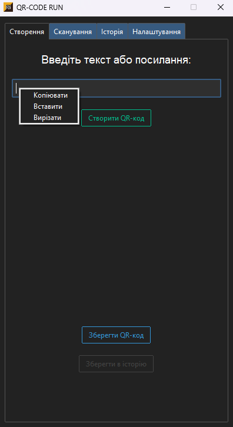
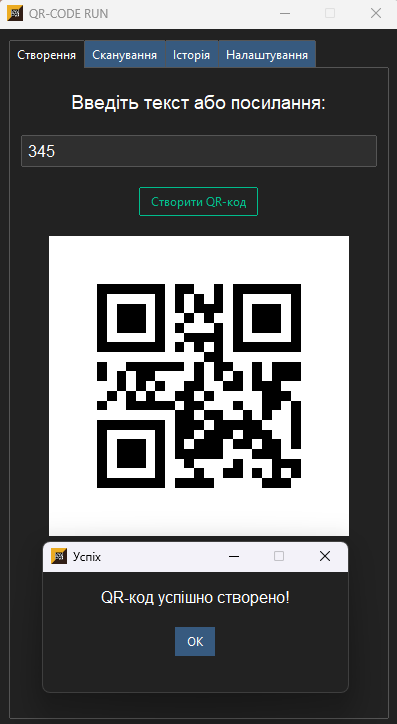
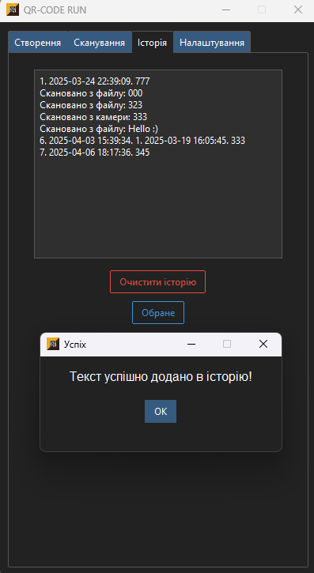
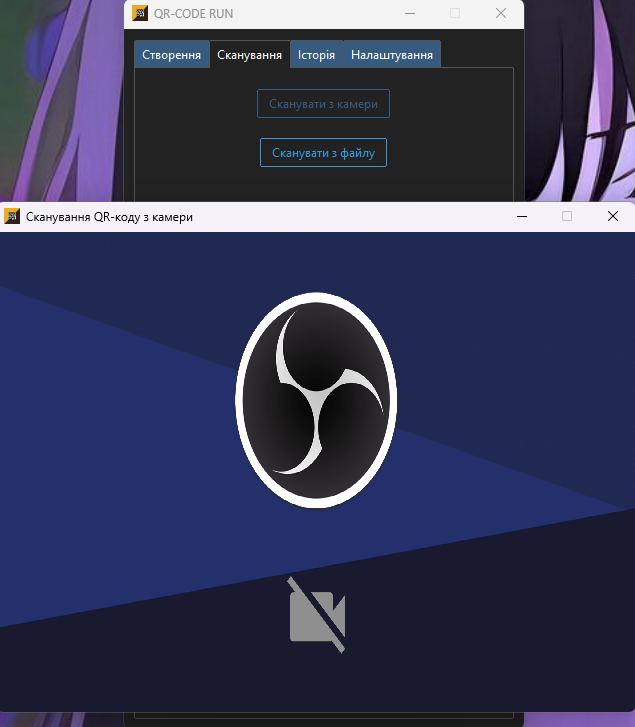
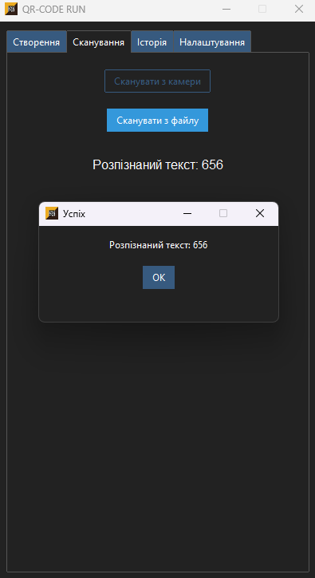
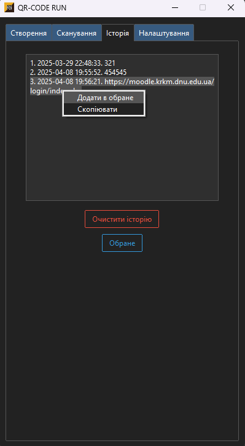
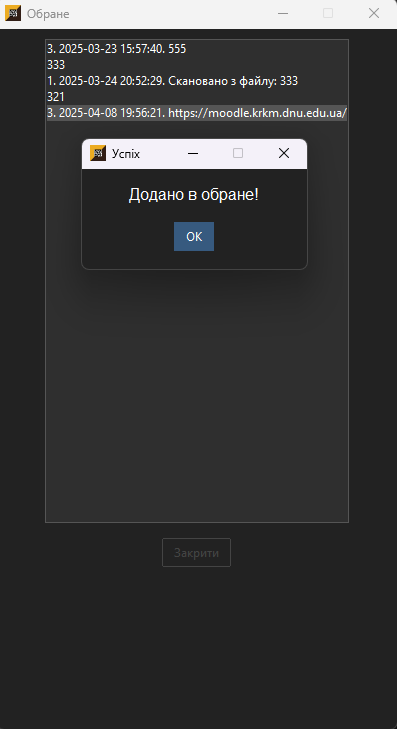
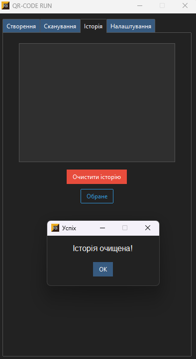
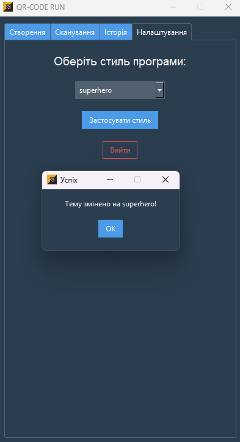
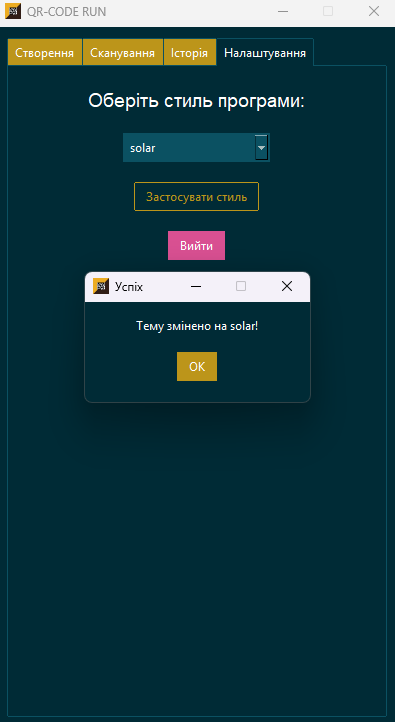

Проєкт «QR-CODE RUN»
Засобами мови Python та структурно-орієнтованим підходом програмування був розроблений додаток для роботи з QR-кодами.
Програмний комплекс має забезпечувати користувачеві можливість взаємодії з QR-кодами, зміни тем програми та вести історію роботи з QR-кодами та створенням своїх QR-кодів.
Додаток має включати наступні основні функції меню:
- Меню «Створення»:
- Користувач може створювати QR-коди на основі введених даних або вставити скопійоване посилання (текст, посилання, тощо).
- Збереження створеного QR-коду у вигляді зображення (png формату) та збереження в історії у вигляді тексту.
- Меню «Сканування»:
- Можливість зчитування QR-кодів за допомогою камери або завантаження зображення.
- Виведення результатів розшифровки (наприклад: тексту, посилань) буде автоматично зберігатися в історії.
- Меню «Історія»:
- Інформація про всі створені та скановані QR-коди (які зберіг користувач).
- Можливість перегляду історії у вигляді списку із деталями кожного запису (дата сканування та час).
- Можливість додати збережену інформацію в «Обране».
- Видалення записів (за бажанням користувача).
- Меню «Налаштування»:
- Вибір стилю програми з чотирнадцяти доступних варіантів.
- Вихід з програми.
Меню "Створення"
Для забезпечення коректної роботи були використані такі функції:
- Create_tab: Створює інтерфейс з полем вводу, кнопками для генерації та збереження QR-коду.
- Add_context_menu: Додає контекстне меню для операцій з текстом (копіювання, вставка, вирізання).
- Paste_text: Вставляє текст з буфера обміну.
- Generate_qr: Генерує QR-код на основі введеного тексту.
- Save_qr: Зберігає QR-код у файл.
- save_to_history: Додає введений текст в історію зберігання.
Текст функцій можна подивитися тут
Приклади роботи меню тут



def create_tab(self):
"""Створення QR-кодів"""
label = ttk.Label(self.tab_create, text="Введіть текст або посилання:", font=("Helvetica", 14), anchor=CENTER)
label.pack(pady=10)
self.qr_text = ttk.Entry(self.tab_create, font=("Helvetica", 12), width=40)
self.qr_text.pack(pady=10)
self.qr_text.bind("", self.show_context_menu_qr_text)
self.qr_text.bind("", self.paste_text)
generate_button = ttk.Button(self.tab_create, text="Створити QR-код", command=self.generate_qr, bootstyle="success-outline")
generate_button.pack(pady=10)
self.qr_canvas = ttk.Canvas(self.tab_create, width=300, height=300)
self.qr_canvas.pack(pady=10)
save_qr_button = ttk.Button(self.tab_create, text="Зберегти QR-код", command=self.save_qr, bootstyle="info-outline")
save_qr_button.pack(pady=10)
save_history_button = ttk.Button(self.tab_create, text="Зберегти в історію", command=self.save_to_history, bootstyle="secondary-outline")
save_history_button.pack(pady=10)
def show_context_menu_qr_text(self, event):
"""Контекстне меню для поля вводу (qr_text)"""
context_menu = ttk.Menu(self.qr_text, tearoff=0)
context_menu.add_command(label="Копіювати", command=lambda: self.qr_text.event_generate("<>"))
context_menu.add_command(label="Вставити", command=lambda: self.qr_text.event_generate("<>"))
context_menu.add_command(label="Вирізати", command=lambda: self.qr_text.event_generate("<>"))
context_menu.tk_popup(event.x_root, event.y_root)
def paste_text(self, event=None):
"""Вставка тексту з буфера обміну"""
try:
clipboard_content = self.root.clipboard_get()
if clipboard_content:
self.qr_text.delete("1.0", "end")
self.qr_text.insert("insert", clipboard_content)
except Exception:
self.qr_text.bind("<>", self.paste_text)
def generate_qr(self):
"""Генерація QR-коду"""
text = self.qr_text.get().strip()
if not text:
self.show_popup("Помилка", "Введіть текст або посилання для створення!")
return
qr = qrcode.QRCode(version=1, box_size=10, border=5)
qr.add_data(text)
qr.make(fit=True)
self.qr_image = qr.make_image(fill_color="black", back_color="white")
self.qr_image.save("qr_code_temp.png")
img = Image.open("qr_code_temp.png").resize((300, 300))
self.qr_img = ImageTk.PhotoImage(img)
self.qr_canvas.create_image(150, 150, image=self.qr_img)
os.remove("qr_code_temp.png")
self.show_popup("Успіх", "QR-код успішно створено!")
def save_qr(self):
"""Збереження QR-коду"""
if not self.qr_image:
self.show_popup("Помилка", "Спочатку створіть QR-код!")
return
file_path = filedialog.asksaveasfilename(defaultextension=".png", filetypes=[("PNG файли", "*.png")])
if file_path:
self.qr_image.save(file_path)
self.show_popup("Успіх", f"QR-код збережено в: {file_path}")
def save_to_history(self):
"""Збереження тексту в історію"""
text = self.qr_text.get().strip()
if not text:
self.show_popup("Помилка", "Введіть текст або посилання перед збереженням!")
return
timestamp = datetime.now().strftime("%Y-%m-%d %H:%M:%S")
history_entry = f"{len(self.history) + 1}. {timestamp}. {text}"
self.history.append(history_entry)
self.update_history()
self.save_history_to_file()
self.show_popup("Успіх", "Текст успішно додано в історію!")
Меню "Сканування
Для забезпечення коректної роботи були використані такі фунції:
- create_scan_tab: функція для створення вкладки меню «Сканування» та налаштування її інтерфейсу.
- load_qr_file: функція, яка відповідає за завантаження зображення QR-коду з файлу та розпізнавання його.
- scan_with_webcam: функція для сканування QR-коду через веб-камеру.
- display_scan_result: функція для відображення результату сканування.
Текст функцій можна подивитися тут
Приклади роботи меню тут


def scan_tab(self):
"""Сканування QR-кодів"""
scan_camera_button = ttk.Button(self.tab_scan, text="Сканувати з камери", command=self.scan_qr, bootstyle="primary-outline")
scan_camera_button.pack(pady=10)
scan_file_button = ttk.Button(self.tab_scan, text="Сканувати з файлу", command=self.scan_from_file, bootstyle="info-outline")
scan_file_button.pack(pady=10)
self.scan_result = ttk.Label(self.tab_scan, text="", font=("Helvetica", 12), wraplength=300, anchor=CENTER)
self.scan_result.pack(pady=20)
def scan_qr(self):
"""Сканування QR-коду з камери"""
detector = cv2.QRCodeDetector() # Ініціалізуємо детектор QR-кодів
result_text = "" # Змінна для зберігання результату
# Створення нового вікна для камери
camera_window = tk.Toplevel(self.root)
camera_window.title("Сканування QR-коду з камери")
camera_window.geometry("640x480")
camera_window.iconbitmap(self.resource_path("code1.ico")) # Встановлення іконки
camera_window.resizable(False, False)
# Ініціалізуємо canvas для відображення відео з камери в новому вікні
camera_canvas = tk.Canvas(camera_window, width=640, height=480)
camera_canvas.pack()
# Відкриваємо камеру
cap = cv2.VideoCapture(0, cv2.CAP_DSHOW) # Спробуємо індекс 0
if not cap.isOpened():
self.show_popup("Помилка", "Камеру не вдалося відкрити!")
print("Не вдалося відкрити камеру") # Вивести повідомлення в консоль
return
def update_frame():
ret, frame = cap.read() # Читаємо кадр з камери
if not ret: # Якщо кадр не вдалося прочитати, виходимо
self.show_popup("Помилка", "Не вдалося отримати кадр з камери!")
cap.release()
return
# Спроба знайти QR-код на кадрі
decoded_text, points, _ = detector.detectAndDecode(frame)
if points is not None: # Якщо код знайдено
cv2.polylines(frame, [points.astype(int)], True, (0, 255, 0), 2) # Відображаємо контур коду
if decoded_text: # Якщо код розпізнано
result_text = decoded_text
self.show_popup("Розпізнаний текст", result_text) # Показати результат
self.scan_result.config(text=f"Розпізнаний текст: {decoded_text}")
# Додаємо текст в історію
self.history.append(f"Скановано з камери: {decoded_text}")
self.save_history_to_file()
self.update_history()
cap.release() # Звільнити камеру
camera_window.destroy() # Закрити вікно після успішного сканування
return
# Конвертуємо кадр для відображення в tkinter
cv2image = cv2.cvtColor(frame, cv2.COLOR_BGR2RGB)
img = Image.fromarray(cv2image)
imgtk = ImageTk.PhotoImage(image=img)
# Оновлюємо зображення на Canvas в новому вікні
camera_canvas.create_image(0, 0, anchor=tk.NW, image=imgtk)
camera_canvas.image = imgtk # Не забувайте зберігати посилання на зображення
# Плануємо наступне оновлення через 10 мс
camera_window.after(10, update_frame)
# Запуск оновлення відео
update_frame()
# Закриття камери при виході
camera_window.protocol("WM_DELETE_WINDOW", lambda: (cap.release(), camera_window.destroy()))
def scan_from_file(self):
"""Сканування QR-коду з зображення"""
try:
file_path = filedialog.askopenfilename(filetypes=[("Зображення", "*.png;*.jpg;*.jpeg;*.bmp;*.tiff")])
if not file_path:
self.show_popup("Помилка", "Файл не обрано!")
return
file_path = os.path.abspath(file_path)
if not os.path.exists(file_path):
self.show_popup("Помилка", "Файл не існує або шлях некоректний!")
return
try:
pil_image = Image.open(file_path).convert("RGB")
pil_image = ImageOps.exif_transpose(pil_image)
image = np.array(pil_image)
image = cv2.cvtColor(image, cv2.COLOR_RGB2BGR)
except Exception as e:
self.show_popup("Помилка", f"Не вдалося відкрити зображення: {e}")
return
gray = cv2.cvtColor(image, cv2.COLOR_BGR2GRAY)
detector = cv2.QRCodeDetector()
decoded_text, points, _ = detector.detectAndDecode(gray)
if decoded_text:
self.scan_result.config(text=f"Розпізнаний текст: {decoded_text}")
self.history.append(f"Скановано з файлу: {decoded_text}")
self.save_history_to_file()
self.update_history()
popup = tk.Toplevel(self.root)
popup.title("Успіх")
popup.geometry("300x120")
popup.resizable(False, False)
popup.iconbitmap(self.resource_path("code1.ico"))
ttk.Label(popup, text=f"Розпізнаний текст: {decoded_text}", wraplength=280).pack(pady=14)
ttk.Button(popup, text="OK", command=popup.destroy).pack(pady=3)
else:
self.show_popup("Помилка", "Не вдалося розпізнати QR-код.")
except Exception as e:
self.show_popup("Помилка", f"Сталася помилка: {e}")
Меню "Історія"
Для забезпечення коректної роботи були використані такі функції:
- add_to_favorites: Додає вибраний запис з історії до списку обраного. Якщо запис уже є в обраному, виводиться попередження.
- open_favorites_window: Відкриває окреме вікно з усіма збереженими обраними записами.
- update_favorites: Оновлює вміст текстового поля, що відображає список обраного.
- save_favorites_to_file: Зберігає всі обрані записи у файл favorites.txt.
- load_favorites: Завантажує обрані записи з файлу при запуску програми.
- show_favorites_context_menu: Відкриває контекстне меню з можливістю копіювання або видалення вибраного запису.
- copy_selected_favorites: Копіює вибраний текст з обраного до буфера обміну.
- remove_selected_text_from_favorites: Видаляє вибраний запис з обраного та оновлює файл.
- show_favorites_popup: Виводить повідомлення про успішне додавання запису до обраного.
- show_remove_favorites_popup: Повідомляє про успішне видалення запису.
- favorites_tab: Викликає функцію відкриття вікна обраного з головного інтерфейсу.
Також є "обране" але для сайту буде багато коду 🤐
Текст функцій можна подивитися тут
Приклади роботи меню тут



def save_to_history(self):
"""Збереження тексту в історію"""
text = self.qr_text.get().strip()
if not text:
self.show_popup("Помилка", "Введіть текст або посилання перед збереженням!")
return
timestamp = datetime.now().strftime("%Y-%m-%d %H:%M:%S")
history_entry = f"{len(self.history) + 1}. {timestamp}. {text}"
self.history.append(history_entry)
self.update_history()
self.save_history_to_file()
self.show_popup("Успіх", "Текст успішно додано в історію!")
def load_history(self):
"""Завантаження історії з файлу"""
try:
with open("history.txt", "r", encoding="utf-8") as file:
self.history = [line.strip() for line in file.readlines()]
except FileNotFoundError:
self.history = []
def save_history_to_file(self):
"""Збереження історії в файл"""
with open("history.txt", "w", encoding="utf-8") as file:
file.write("\n".join(self.history))
def history_tab(self):
"""Історія QR-кодів"""
# Використовуємо Text widget для відображення історії
self.history_box = ttk.Text(self.tab_history, height=15, width=50)
self.history_box.pack(pady=10)
# Додавання контекстного меню для додавання в обране
self.history_box.bind("", self.show_context_menu)
# Кнопка очищення історії
clear_button = ttk.Button(self.tab_history, text="Очистити історію", command=self.clear_history, bootstyle="danger-outline")
clear_button.pack(pady=5)
# Кнопка переходу до обраного
favorite_button = ttk.Button(self.tab_history, text="Обране", command=self.open_favorites_window, bootstyle="info-outline")
favorite_button.pack(pady=5)
# Оновлення історії в Text widget
self.update_history()
def show_context_menu(self, event):
"""Контекстне меню для історії"""
context_menu = tk.Menu(self.history_box, tearoff=0)
context_menu.add_command(label="Додати в обране", command=self.add_to_favorites)
context_menu.add_command(label="Скопіювати", command=self.copy_selected_text)
context_menu.tk_popup(event.x_root, event.y_root)
def copy_selected_text(self):
"""Копіювання вибраного тексту з текстового поля"""
try:
selected_text = self.history_box.get("sel.first", "sel.last").strip()
if not selected_text:
raise ValueError # Якщо текст не вибраний, викликаємо помилку
pyperclip.copy(selected_text)
self.show_copy_popup() # Викликаємо власне вікно
except:
self.show_popup("Помилка", "Немає вибраного тексту для копіювання!")
Меню "Налаштування"
Для забезпечення коректної роботи були використані такі функції:
- self.theme_selector: Створює комбобокс для вибору теми інтерфейсу програми з доступних варіантів.
- label: Текстова мітка, що інформує користувача про необхідність вибору стилю програми.
- Apply_button: Кнопка для застосування вибраної теми. При натисканні викликає функцію
apply_theme, щоб змінити стиль програми.
- apply_theme: Функція для застосування вибраної користувачем теми до інтерфейсу програми. Вибір теми з комбобоксу передається методу
theme_use, щоб змінити вигляд програми.
- exit_button: Кнопка для виходу з програми. При натисканні викликається метод
exit_program, що закриває програму.
- exit_program: Функція для виходу з програми, яка викликає методи
quit i destroy для закриття вікна.
Текст функцій можна подивитися тут
Приклади роботи меню тут


def settings_tab(self):
"""Налаштування програми"""
label = ttk.Label(self.tab_settings, text="Оберіть стиль програми:", font=("Helvetica", 14), anchor=CENTER)
label.pack(pady=10)
themes = ttk.Style().theme_names()
self.theme_selector = ttk.Combobox(self.tab_settings, values=themes, state="readonly")
self.theme_selector.pack(pady=10)
self.theme_selector.set(ttk.Style().theme_use())
apply_button = ttk.Button(self.tab_settings, text="Застосувати стиль", command=self.apply_theme, bootstyle="primary-outline")
apply_button.pack(pady=10)
# Кнопка для виходу
exit_button = ttk.Button(self.tab_settings, text="Вийти", command=self.exit_program, bootstyle="danger-outline")
exit_button.pack(pady=10)
def exit_program(self):
"""Вихід з програми"""
self.root.quit()
self.root.destroy()
def apply_theme(self):
"""Застосування теми"""
theme = self.theme_selector.get()
if theme:
ttk.Style().theme_use(theme)
popup = tk.Toplevel(self.root)
popup.title("Успіх")
popup.geometry("225x100")
popup.resizable(False, False)
popup.iconbitmap(self.resource_path("code1.ico"))
ttk.Label(popup, text=f"Тему змінено на {theme}!").pack(pady=14)
ttk.Button(popup, text="OK", command=popup.destroy).pack(pady=3)